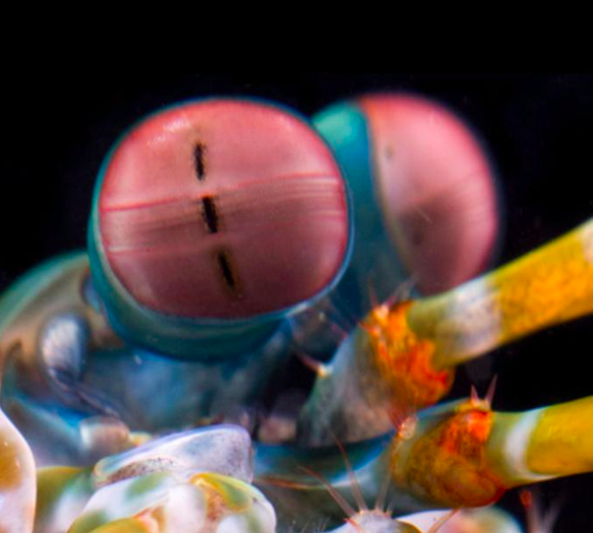

Pequenas, porém fascinantes
Fatos Sobre a lagosta-boxeadora
Quem são as lagostas-boxeadoras?
As lagostas-boxeadoras, conhecidas cientificamente como Odontodactylus scyllarus, são representantes dos stomatopodas. Sua taxonomia é:
| Reino: | Animalia |
| Filo: | Crustacea |
| Classe: | Malacostraca |
| Ordem: | Stomatopoda |
Visão Poderosa
Todos nós possuímos dois tipos de células nos nossos olhos que são sensíveis à luz: os bastonetes e os cones. Os primeiros nos permitem ver a luz e movimentos. Já os cones nos permitem diferenciar as cores. Os humanos possuem três tipos diferentes de cones: um para azul, outro para verde e um último para vermelho.
Outros animais possuem mais tipos de cones do que nós, como é o caso das borboletas que possuem 5 tipos diferentes de cones. Entretanto, as lagostas-boxeadoras são extremamente fascinantes, pois possuem 16 tipos de cones. Imaginem quantas cores elas conseguem enxergar!!!
Bonitas, porém perigosas

Apesar de toda sua beleza, as lagostas-boxeadoras são animais extremamente perigosas. Elas possuem na frente do seu corpo dois apêndices predatórios, que se movem tão rápido quanto uma bala. Em menos de 3 milésimos de segundo, esses apêndices conseguem atingir uma presa com uma força de 1500 N. Isso é tão rápido, que a água ferve ao seu redor e pequenos raios de luz.